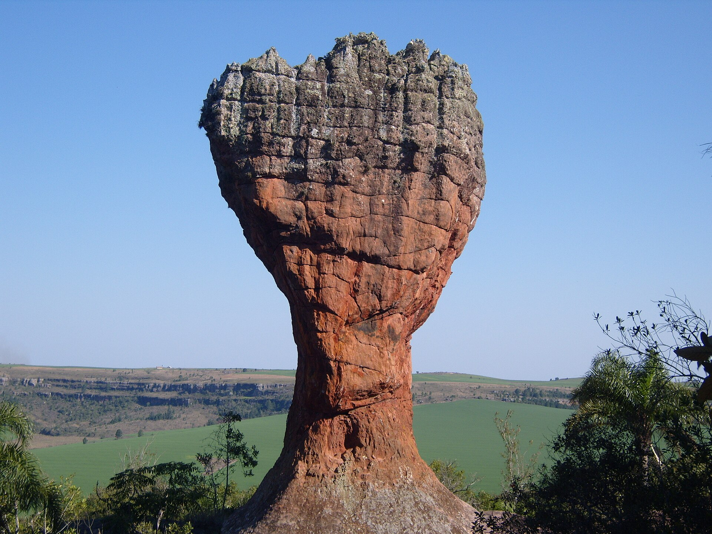
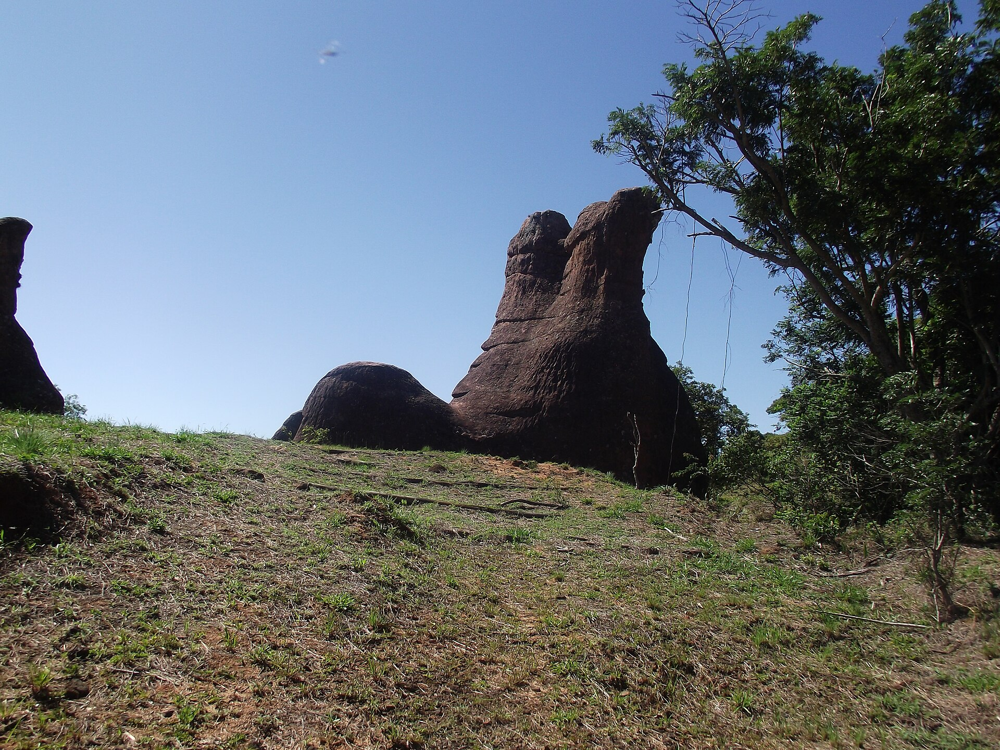
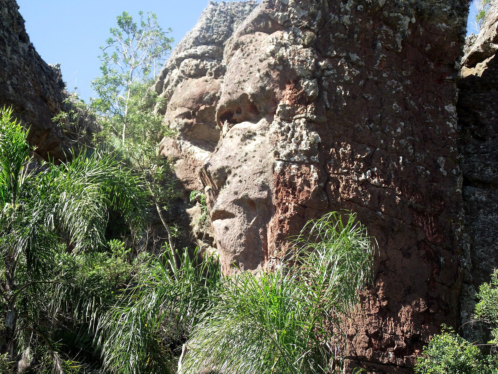
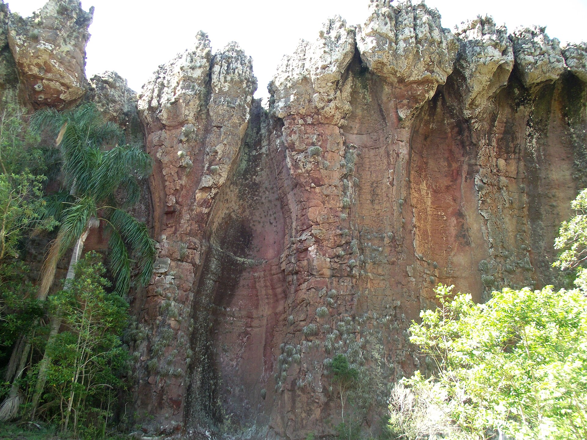
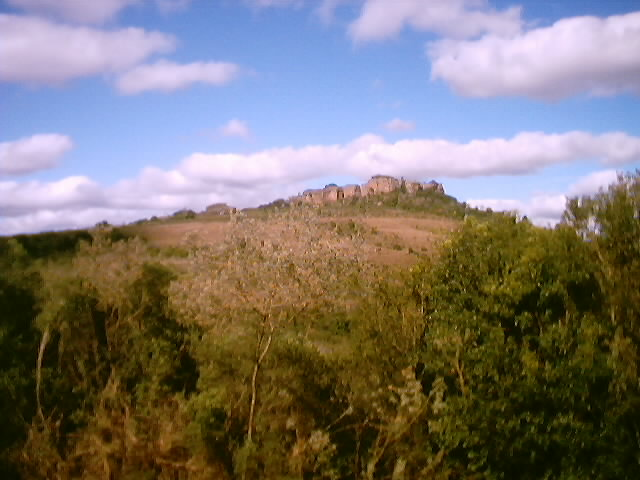

Geografia
A região é formada por planaltos, campos naturais e majestosas formações rochosas de arenito.
O relevo apresenta depressões, furnas e lagoas naturais formadas por processos geológicos ao longo de milhões de anos.
Ponta Grossa — Paraná, Brasil
Arenitos esculpidos pelo tempo, Furnas profundas e a mística Lagoa Dourada — um dos sítios geológicos mais impressionantes do Brasil.
Arenitos, Furnas e Lagoa Dourada formam um conjunto geológico raro, a poucos minutos do centro de Ponta Grossa.
Geografia, clima e localização de um dos parques mais fascinantes do Brasil.
O conjunto de formações rochosas lembra uma cidade medieval com castelos e torres em ruínas — daí o nome Vila Velha. As colunas e muralhas de arenito atingem, em média, 20 metros de altura, podendo chegar a mais de 30 metros.
Ao longo de milhões de anos, a ação do vento e da chuva esculpiu blocos de arenito em formas exóticas, enquanto processos geológicos criaram depressões, furnas e lagoas naturais.
A região é formada por planaltos, campos naturais e majestosas formações rochosas de arenito.
O relevo apresenta depressões, furnas e lagoas naturais formadas por processos geológicos ao longo de milhões de anos.
O clima é subtropical úmido, possuindo verões moderadamente quentes e invernos frios, com possibilidade de geadas.
As chuvas são bem distribuídas ao longo de todo o ano.
Localizado em Ponta Grossa, no estado do Paraná, o parque está a cerca de 90 km de Curitiba.
O acesso principal é realizado pela Rodovia BR-376 e é possível chegar de carro ou por excursões turísticas.
Do mar interior ao parque protegido: a história que esculpiu Vila Velha.
No período Carbonífero, um mar interior cobria a região. Os sedimentos arenosos se depositaram e, cimentados por óxido de ferro, deram origem ao arenito avermelhado.
As rochas do Grupo Itararé testemunharam eras glaciais e desertos antigos, na borda leste da Bacia do Paraná.
Forças tectônicas elevaram o Arco de Ponta Grossa no início do Evento Sul-Atlântico — a época em que América do Sul e África começaram a se separar.
O terreno se elevou e foi erodido de forma diferencial, isolando blocos e criando as formas que hoje encantam os visitantes.
Em 1966 o patrimônio histórico e artístico do Paraná passa a proteger as formações. Em 24 de setembro de 1990 é criado oficialmente o Parque Estadual de Vila Velha.
Muito tempo atrás teria existido Abaretama — um refúgio sagrado onde se escondia o itainhareru, um tesouro valioso protegido pelos apiabas, os guerreiros mais fortes da tribo, com a bênção de Tupã. Eles só permaneciam guardiões enquanto se mantivessem longe de qualquer mulher.
O conflito começa quando Dhui, chefe dos guerreiros, passa a questionar seu destino. Tribos rivais enviam Aracê Poranga para seduzi-lo e descobrir o segredo. Mas o plano se transforma em paixão: à sombra de um ipê, os dois se entregam ao amor e esquecem seus deveres.
Tupã, irado, não perdoa a quebra do juramento e lança um terremoto violento. Abaretama é transformada em pedra, o ouro do tesouro derrete e dá origem à Lagoa Dourada, e os dois amantes são eternizados na rocha, unidos para sempre. Assim, Abaretama tornou-se Itacueretaba.
Três sítios vizinhos que reúnem geologia, história e paisagens inesquecíveis.
Formações rochosas esculpidas pela erosão, algumas com formatos que lembram objetos ou animais.
Grandes crateras naturais com profundidade de até 100 metros, formadas por processos geológicos há milhões de anos.
Lagoa de águas limpas que refletem a luz do sol ganhando um tom dourado. É conectada a algumas furnas por canais subterrâneos.
A erosão diferencial criou blocos que a imaginação popular batizou com nomes curiosos.

Formação que lembra uma grande taça de licor e se tornou o cartão-postal de Vila Velha.
O formato do bloco lembra a cabeça de um camelo, um dos mais fotografados do parque.

Erguida sobre os campos naturais, a pedra tem o contorno de uma bota.

A erosão desenhou na rocha o perfil de um rosto humano.

Paredões com fendas cujo formato interno lembra garrafas encaixadas na rocha.

Paredes e torres de alturas variadas que fazem a paisagem lembrar uma cidade medieval.
Clique em uma foto para ampliar e navegar pela galeria completa.
Tudo o que você precisa saber antes de ir ao parque.
Funciona todos os dias da semana, geralmente das 8h às 17h. O horário pode variar em feriados ou datas especiais. O parque abre cedo para garantir tempo suficiente na exploração das trilhas.
O valor varia, geralmente ficando entre R$40 e R$90 (inteira ou meia). O ingresso permite visitar os arenitos, furnas e Lagoa Dourada. Estudantes, idosos e alguns grupos têm direito à meia-entrada.
O local conta com centro de visitantes, lanchonete, restaurante, áreas de descanso, banheiro e transporte interno para as atrações. Há refeições simples e mirantes para observar as paisagens.
A presença de guias é recomendada, principalmente nas furnas e trilhas longas. O sinal de celular é limitado pela natureza, mas o centro de visitantes possui acesso à internet. Placas informativas ajudam na comunicação.
O parque fica a cerca de 20 km do centro de Ponta Grossa e a aproximadamente 90 km de Curitiba. O acesso principal é realizado pela Rodovia BR-376, e é possível chegar de carro ou por excursões turísticas.
Respostas rápidas para as dúvidas mais comuns dos visitantes.
O parque funciona todos os dias da semana, geralmente das 8h às 17h. O horário pode variar em feriados ou datas especiais.
O valor varia, geralmente ficando entre R$40 e R$90 (inteira ou meia). O ingresso permite visitar os arenitos, as furnas e a Lagoa Dourada. Estudantes, idosos e alguns grupos têm direito à meia-entrada.
O acesso principal é feito pela Rodovia BR-376. O parque fica a cerca de 90 km de Curitiba e a aproximadamente 20 km do centro de Ponta Grossa. É possível chegar de carro ou por excursões turísticas.
O clima é subtropical úmido, com verões moderadamente quentes e invernos frios, que podem registrar geadas. As chuvas são bem distribuídas ao longo do ano, por isso o parque pode ser visitado em qualquer estação — apenas vista roupas adequadas ao frio no inverno.
A presença de guias é recomendada, principalmente nas furnas e nas trilhas mais longas. Os guias oferecem informações valiosas sobre a formação geológica e a flora local.
Sim. O parque conta com centro de visitantes, lanchonete, restaurante, áreas de descanso, banheiros e transporte interno para as atrações. O centro de visitantes possui acesso à internet — o sinal de celular é limitado em meio à natureza.
Cuidar da natureza é o que garante o futuro do Parque Estadual de Vila Velha.
A segurança dos visitantes e a preservação do meio ambiente caminham juntas no Parque. Contamos com equipes de monitoramento e sinalização em trilhas e áreas de risco. Para que a beleza de Vila Velha continue encantando gerações futuras, estabelecemos algumas regras de conduta vitais:
“A natureza de Vila Velha levou milhões de anos para ser esculpida. Nossa missão é protegê-la a cada segundo.”
Guias e placas informativas aproximam os visitantes da geologia e da flora do parque.
Caminhos delimitados protegem as rochas frágeis e garantem a segurança de todos.
Equipes acompanham as áreas de risco e as trilhas, cuidando do patrimônio natural.